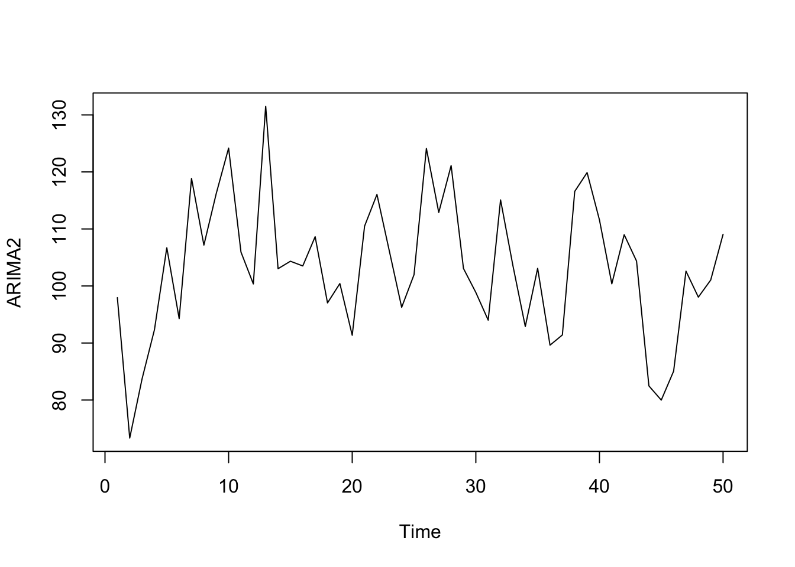

Kapitel 11 ARIMA(0,1,0) eller I(1) Random Walk with a drift
Hvis en serie er ikke-stationær, er den simpleste model en random walk:
\[\hat{Y_t}-Y_{t-1}=\mu\Leftrightarrow \hat{Y_t}=\mu-Y_{t-1}\] Dette betyder at Y stiger konstant med \(\mu\) i hver periode. Drift betyder at tidsrækken stiger konstant.
Kald den næste vektor for ARIMA3:
structure(c(100, 110.695, 116.16, 123.983, 124.182, 118.432,
114.157, 116.126, 126.584, 139.104, 149.709, 166.794, 172.85,
168.264, 184.061, 188.304, 196.156, 203.239, 217.565, 226.016,
236.986, 250.127, 254.33, 255.305, 280.172, 295.641, 323.152,
337.009, 344.1, 371.613, 383.138, 390.722, 390.121, 392.329,
408.905, 423.546, 411.232, 436.033, 441.104, 433.005, 436.042,
455.257, 455.92, 473.371, 475.472, 490.525, 492.407, 500.438,
506.987, 504.54, 495.746), .Dim = c(51L, 1L), .Dimnames = list(
NULL, "Dagskurs"), .Tsp = c(1, 51, 1), class = "ts")
## Series: ARIMA3
## ARIMA(0,1,0) with drift
##
## Coefficients:
## drift
## 7.9149
## s.e. 1.2790
##
## sigma^2 estimated as 83.46: log likelihood=-181.05
## AIC=366.1 AICc=366.36 BIC=369.93Modellen ovenfor kan skrives som: \[\hat{Y_t}-Y_{t-1}=\mu\Leftrightarrow \hat{Y_t}-Y_{t-1}=7.9\] Vi indsætter drift i stedet for \(\mu\), tolningen er at modellen forudsiger at aktiekursen stiger med 7.9 fra periode til periode.
Forstiller man sig en ARIMA(0,1,0) med drift 10 og en kurs på tidspunkt t-1 på 120, vil vi forudsige en kurs på 130 ved tid t og 140 ved tid t+1 osv.
Hvis vi har en ren random walk model uden drift dvs. med \(\mu=0\) ARIMA(0,1,0) for en aktiekurs , forventer vi at kursen til tid t vil være den samme som til tid t-1. Denne kan skrives som:
\[\hat{Y_t}-Y_{t-1}=0\]